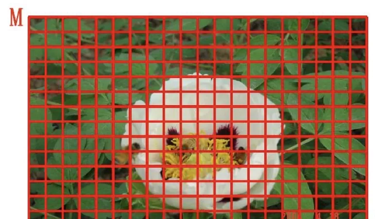
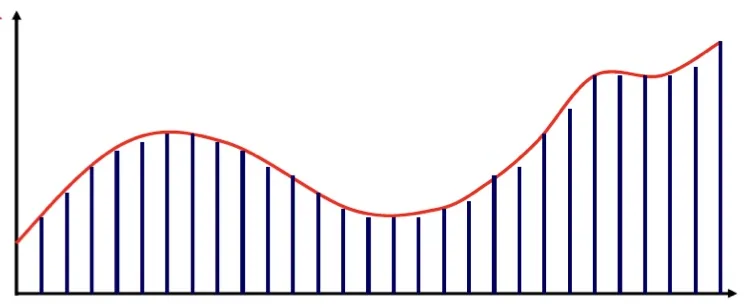
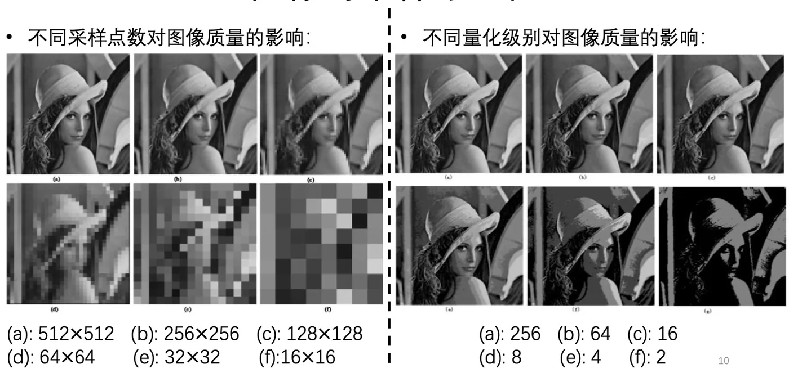

计算机视觉 · 第 2 章 图像处理基础
2.2 图像的采样与量化
上一节说数字图像来自连续图像，中间隔着采样与量化两道工序。这一节就把这两道工序讲清楚：采样处理空间坐标，决定图像有多少个像素；量化处理灰度值，决定每个像素能取多少个值。课件对每一步都给出了操作定义和一个「取多细」的取舍，最后用两组对照实验把两种失真的差别摆出来。
1. 图像采样：空间坐标的数字化
图像采样（sampling）是图像空间坐标的数字化，通俗地说就是「在图像平面上选取哪些坐标点」。连续平面上本来处处都有幅值，采样之后只有被选中的那些位置留下来成为像素，其余位置的信息不再保留。所以采样是把连续平面变成像素网格的那一步。
采样间隔是这一步唯一的自由参数，而它对结果的影响非常直接：采样间隔越小，所得像素越多，图像的空间分辨率越高，细节越清晰。道理不难想——间隔小意味着取点密，场景中那些靠得很近的结构才有机会各自落到自己的像素上，轮廓和纹理才不会被抹平。
但代价同样明确：像素多了文件尺寸大，处理时间长，对设备的存储与算力要求也随之提高。分辨率不是越高越好，而是要在「看得清」和「存得下、算得动」之间取一个平衡，这正是实际工程里最常遇到的一类取舍。也正因为如此，后面讲图像缩小时要专门处理下采样的问题。

2. 图像量化：灰度值的数字化
采样只解决了「在哪里取点」，取到的点上的幅值仍然是连续量，还差一步转换。图像量化（quantization）处理的就是这个量：它是图像函数值（灰度值）的数字化，可以理解为幅值的数字化。经过量化，每个像素的灰度值才变成计算机能存的整数。
课件介绍的方式是均匀量化：将灰度级值等间隔分档取整。所谓等间隔分档，就是把灰度的取值范围切成若干段长度相同的区间，同一个区间内的连续取值统一取整到该档的代表值上去。2.1 节所说的「256 个灰度等级」，就是在这种分档方式下得到的结果。
量化与采样一样有粗细之分，而它的后果更容易看出来：随着灰度等级的减少，图像的细节信息在逐渐损失，视觉效果越差。原因是原本明暗略有差别的相邻区域，被归并到了同一个灰度值上，这些差别从此无法区分。而且这种损失是不可逆的——采样丢弃的位置信息、量化抹平的明暗差别，都不会因为后面把图像放大或做变换而回来。理解这一点，就能理解为什么后续的每一个处理步骤都要尽量少地再引入新的信息损失。

3. 采样点数与量化级别对图像质量的影响
道理讲完，还需要看一眼效果。课件用两组对照实验来说明：一组只改变采样点数，从 (a) 512×512 依次降到 (f) 16×16；另一组只改变量化级别，从 (a) 256 依次降到 (f) 2。两组都按 (a)–(f) 编号，但它们是各自独立的对照，编号相同并不表示同一幅图。
| 编号 | 采样点数 | 量化级别 |
|---|---|---|
| (a) | 512 × 512 | 256 |
| (b) | 256 × 256 | 64 |
| (c) | 128 × 128 | 16 |
| (d) | 64 × 64 | 8 |
| (e) | 32 × 32 | 4 |
| (f) | 16 × 16 | 2 |
把两组的结论合起来看，会发现它们破坏图像的方式并不相同。采样不足影响的是「像素在哪里」：位置被抽稀之后，原本连续的结构失去了落脚点，图像的空间细节先损失掉。量化不足影响的是「像素有多亮」：位置一个没少，但灰度被压缩到很少的几个档位上，明暗层次先损失掉。同一幅图用两种方式劣化，看上去并不是同一种「模糊」，这也说明空间分辨率与灰度分辨率是两个独立的质量维度，缺哪一个都不行。

本节小结
- 图像采样是空间坐标的数字化，可以理解为坐标点的选取；采样间隔越小，所得像素越多、空间分辨率越高、细节越清晰，但同时文件尺寸大、处理时间长、对设备要求高。
- 图像量化是图像函数值（灰度值）的数字化；均匀量化把灰度级值等间隔分档取整，随着灰度等级的减少，图像的细节信息逐渐损失，视觉效果越差。
- 课件第 10 张给出两组对照：采样点数由 512×512 降到 16×16、量化级别由 256 降到 2，图像质量都随之下降，但前者损失的是空间细节、后者损失的是明暗层次。
- 采样与量化都是不可逆的信息损失，它们分别对应后面经常出现的「空间分辨率」与「灰度级数」两个概念；图像缩小所涉及的下采样问题将在 2.12 节展开。